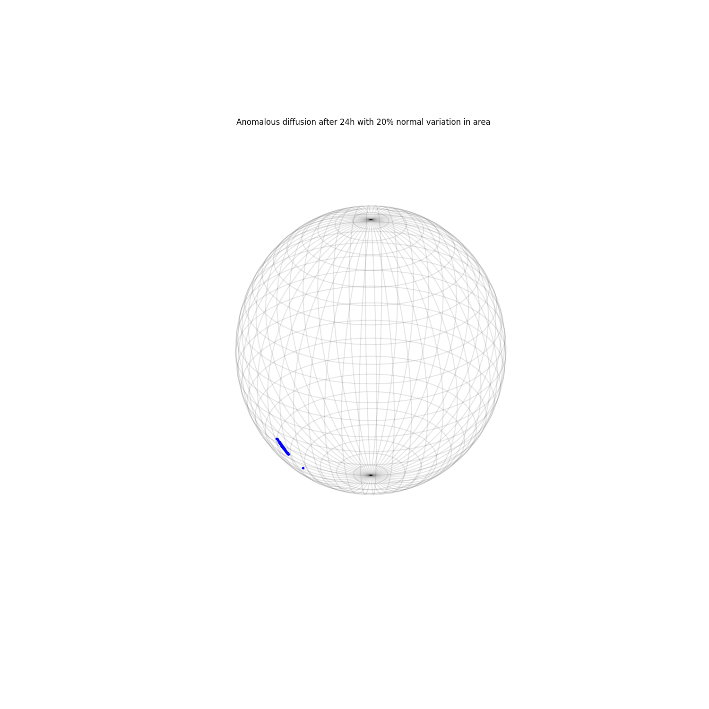

Note
Click here to download the full example code
Simulating atmospheric drag uncertainty directly¶

import numpy as np
import matplotlib.pyplot as plt
from mpl_toolkits.mplot3d import Axes3D
import pyorb
from astropy.time import Time
from sorts.propagator import SGP4
from sorts import SpaceObject
from sorts.plotting import grid_earth
opts = dict(
settings = dict(
out_frame='TEME',
),
)
obj = SpaceObject(
SGP4,
propagator_options = opts,
a = 6800e3,
e = 0.0,
i = 69,
raan = 0,
aop = 0,
mu0 = 0,
epoch = Time(57125.7729, format='mjd'),
parameters = dict(
A = 2.0,
)
)
#change the area every 10 minutes
dt = 600.0
#propagate for 24h
steps = int(24*3600.0/dt)
states = []
for mci in range(100):
mc_obj = obj.copy()
state = np.empty((6, steps), dtype=np.float64)*np.nan
for ti in range(steps):
mc_obj.parameters['A'] = (1 + np.random.randn(1)[0]*0.2)*obj.parameters['A']
try:
mc_obj.propagate(dt)
except:
break
state[:,ti] = mc_obj.orbit.cartesian[:,0]
states += [state]
fig = plt.figure(figsize=(15,15))
ax = fig.add_subplot(111, projection='3d')
grid_earth(ax=ax)
for mci in range(len(states)):
ax.plot([states[mci][0,-1]], [states[mci][1,-1]], [states[mci][2,-1]], ".b", alpha=1)
ax.set_title('Anomalous diffusion after 24h with 20% normal variation in area')
plt.show()
Total running time of the script: ( 0 minutes 38.827 seconds)